1. 동물 전래동화
동물 이야기(talking beasts)는 동물들이 사람처럼 생각하고 이야기하는 의인화된 이야기로서 우화에서 유래한다. 이야기에 나오는 동물들은 인간의 행동 특성을 과장하여 묘사한다. 인간과 매우 닮은 동물들은 지혜를 발휘하여 어려움을 헤쳐 나간다.
동물에서 호랑이는 용맹스러우나 때때로 어리석고, 토끼는 약하나 재빠르고 지혜로우며 곰은 우직하다는 의미가 있다.
전래동화 ‘토끼와 호랑이’, ‘개미와 베짱이’, ‘장화 신은 고양이」 등이 동물이야기 속한다.
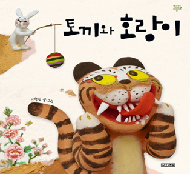 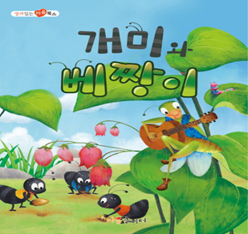
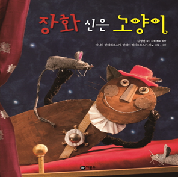
2. 익살이나 유머 전래동화
익살이나 유머 이야기(the drolls or humorous stories)는 엉뚱하면서도 우스꽝스러운 기발한 사건을 펼쳐나간다. 전통사회에서 소외되었던 평민들이 권력과 악의에 저항하고자 풍자나 해학을 담은 내용들을 많이 찾아볼 수 있다.
못난이나 바보의 엉뚱하고 어리석은 행동으로 저항하고 진실된 모습을 보여줌으로써 올바른 가치를 깨닫도록 한다.
유머가 있는 익살이나 이야기 ‘좁쌀 한톨로 장가 든 총각’, ‘임금님 귀는 당나귀 귀’, ‘방귀쟁이 며느리’ 등 다양하다.
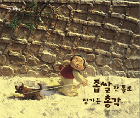
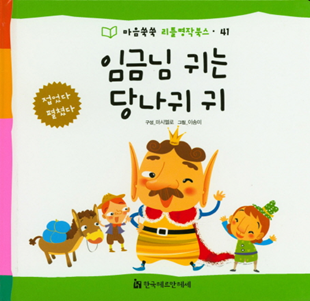
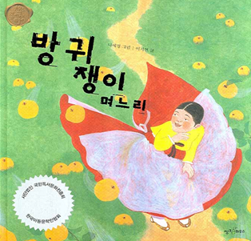
3. 마술적 전래동화
마술적 이야기(tales og magics)는 현실에서 극복할 수 없는 어려움을 마법사, 요정, 도깨비, 선녀 등이 등장하여 신비한 능력을 발휘한다. 이들은 불가능한 일을 하고 가능하게 하고, 악한 주인공에게 벌을 주고, 착한 주인공에게 복을 주기도 한다.
이처럼 불가능한 일을 가능하게 함으로써 놀라운 결말을 통하여 현실에서 극복할 수 없는 어려움을 이겨낼 수 있는 힘과 위안을 얻기도 한다.
마술적 이야기는 ‘잭과 콩나무’, ‘반쪽이’, ‘도깨비 감투’ 등이 있다.
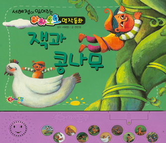
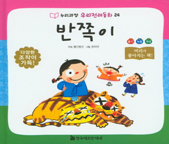 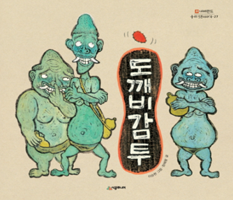
4. 자연물 유래 전래동화
과학문명이 오늘날처럼 발달하지 않았던 과거 시대에 자연현상을 이해하기 쉽게 하기 위하여 의도적으로 만든 경우가 대부분이다. 자연물 유래 전래동화는 그 증거물이 현재까지 남아 있는 이야기가 많이 있다.
자연물 유래 이야기는 ‘해와 달이된 오누이’, ‘세상은 이렇게 시작되었단다’, ‘할미꽃 이야기’ 등이 있다.
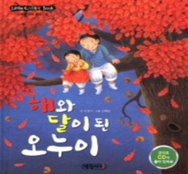
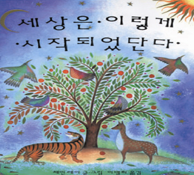 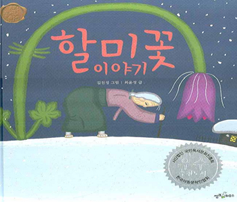
출처: 김동례, 권순황, 선애순(2018). 아동문학. 공동체
2022.12.05 - [분류 전체보기] - 전래동화의 종류 - 신화, 전설, 민담, 우화의 문학적 특징
전래동화의 종류 - 신화, 전설, 민담, 우화의 문학적 특징
1. 신화 : 단군신화, 삼국유사, 바리공주, 마고할미 신화(myths)는 신성시 되는 이야기로 세상이 어떻게 생겨났는지 최초의 사람은 누구였으며 어떻게 살았는지와 같은 초월적 능력을 가진 신과 영
think-sis.co.kr